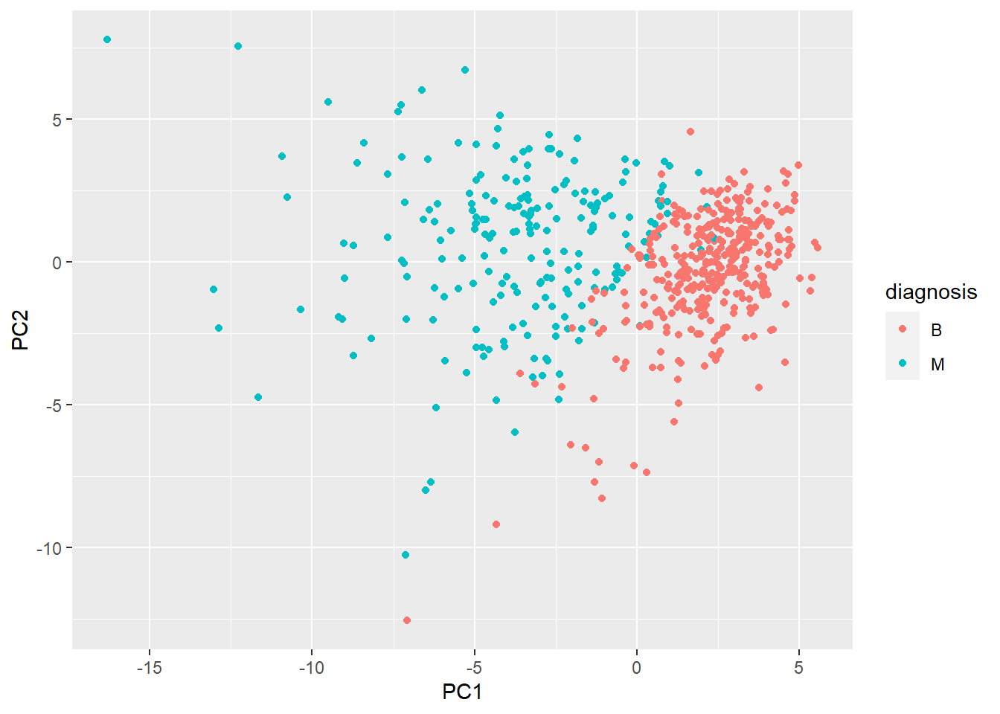
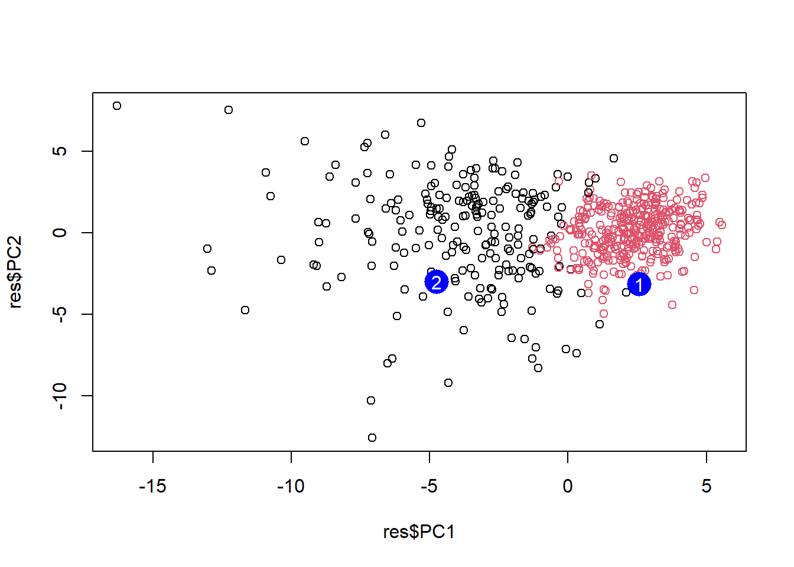

Q4. From your results, what proportion of the original variance is captured by the first principal components (PC1)?
0.4427
Q5. How many principal components (PCs) are required to describe at least 70% of the original variance in the data?
3
Q6. How many principal components (PCs) are required to describe at least 90% of the original variance in the data?
7
interpreting PCA results
biplot(wisc.pr)
Q7. What stands out to you about this plot? Is it easy or difficult to understand? Why?
It’s very messy, can’t make out single items. But I can see two different colors
plot(wisc.pr$x[,1], wisc.pr$x[,2], col = diagnosis , xlab ="PC1", ylab ="PC2")
Q8. Generate a similar plot for principal components 1 and 3. What do you notice about these plots?
plot(wisc.pr$x[,1], wisc.pr$x[,3], col = diagnosis, xlab ="PC1", ylab ="PC3")
The two plots look very similar, but the PC2 plot has a more clear separation between the two groups. And the groups are better separated on the x axis.
ggplot(res) +aes(PC1, PC2, col = diagnosis) +geom_point()

how does PCA work?
PCA takes data sets with lots of dimensions and flattens it into 2d. first largest amount of variation between data sets is PC1. second largest amount of variation is PC2. we can score genes based on how much they influence PC1, same for PC2. the further away the gene is from the mean variance, the higher the score is. Cell1PC1 score = (original read count for a gene in cell 1 * score for influence on PC1) + for all genes
plot(res$PC1, res$PC2, col = grps)points(npc[,1], npc[,2], col ="blue", pch =16, cex =3)text(npc[,1], npc[,2], labels =c(1,2), col ="white")

PCA is useful for analyzing large data sets. it works by finding new variables (PCs) that capture the most variance from the original variables in your data sets.